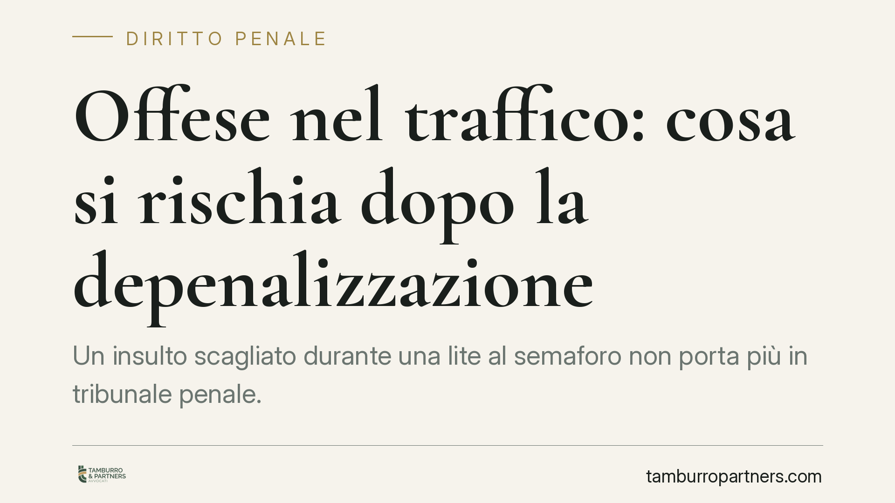

Offese nel traffico: cosa si rischia dopo la depenalizzazione
Un insulto scagliato durante una lite al semaforo non porta più in tribunale penale. Dal 2016 l'ingiuria è depenalizzata: resta però un illecito civile che espone a sanzioni pecuniarie fino a 8.000 euro e all'obbligo di risarcire il danno. La Cassazione ha precisato quando la provocazione altrui può attenuare la responsabilità di chi risponde.

Il fatto
Le liti tra automobilisti sono un classico del traffico urbano. Un sorpasso azzardato, un clacson insistente, una mancata precedenza: basta poco perché scatti l'insulto. Molti credono ancora di poter finire davanti al giudice penale. Non è più così.
Con il decreto legislativo n. 7 del 2016 l'ingiuria, un tempo prevista dall'art. 594 del codice penale, è stata abrogata come reato. L'offesa rivolta a una persona presente non costituisce più illecito penale, ma un illecito civile sanzionato dallo Stato in aggiunta al risarcimento del danno.
Inquadramento normativo
L'art. 4 del d.lgs. 7/2016 stabilisce che chi offende l'onore o il decoro di una persona presente è tenuto al risarcimento del danno e al pagamento di una sanzione pecuniaria civile. Per l'ingiuria semplice l'importo va da 100 a 8.000 euro; sale da 200 a 12.000 euro nei casi aggravati, ad esempio quando l'offesa consiste nell'attribuire un fatto determinato o avviene in presenza di più persone.
È importante chiarire un punto: la sanzione pecuniaria civile non è un risarcimento e non finisce nelle tasche della vittima. Viene versata alla Cassa delle ammende, cioè allo Stato. Il risarcimento del danno, invece, spetta alla persona offesa ed è cosa diversa e aggiuntiva.
Competente a decidere è il giudice civile, non più quello penale. La vittima deve quindi promuovere una causa civile per ottenere sia la condanna al risarcimento sia l'applicazione della sanzione.
Il ruolo della provocazione
La Corte di Cassazione (tra le altre, Cass. n. 3688/2011 e Cass. n. 28487/2013) si è occupata dei limiti entro cui il comportamento altrui può essere considerato un "fatto ingiusto" idoneo ad attenuare la responsabilità di chi reagisce.
Il principio è chiaro: non ogni comportamento fastidioso giustifica la reazione offensiva. Perché ci sia provocazione rilevante occorre un fatto oggettivamente ingiusto, cioè contrario a norme giuridiche o a regole di civile convivenza, e una reazione immediata, proporzionata rispetto allo stimolo ricevuto. Una manovra scorretta al volante può integrare il fatto ingiusto, ma la risposta deve mantenersi entro limiti ragionevoli.
In altre parole: chi viene tagliato la strada non ha una licenza per insultare senza conseguenze. La provocazione può ridurre l'entità della sanzione o del risarcimento, non azzerarla automaticamente.
Implicazioni pratiche
Per l'automobilista medio il quadro è meno drammatico di un tempo sul piano penale, ma non privo di rischi economici. Un insulto pronunciato di fronte a testimoni, oppure accompagnato dall'attribuzione di un fatto specifico e diffamatorio, può integrare l'ipotesi aggravata e far lievitare l'importo.
Va distinta l'ingiuria dalla diffamazione, che resta reato: se l'offesa è rivolta a una persona assente e comunicata ad altri, si applicano regole penali diverse. La depenalizzazione riguarda solo l'offesa alla persona presente.
Attenzione anche al risvolto probatorio: chi vuole agire per ottenere il risarcimento deve dimostrare l'accaduto. Testimoni, registrazioni audio o video, messaggi possono risultare decisivi. Allo stesso modo, chi si difende ha interesse a documentare l'eventuale provocazione ricevuta.
Cosa fare in concreto
- Conserva le prove. Annota data, luogo e presenza di eventuali testimoni; salva registrazioni o filmati che documentino la dinamica.
- Valuta la natura dell'offesa. Verifica se si tratta di ingiuria (persona presente, illecito civile) o di diffamazione (persona assente, ancora reato): il percorso da seguire cambia.
- Non reagire con ulteriori offese. La reazione può neutralizzare l'attenuante della provocazione ed esporti a tua volta a responsabilità.
- Agisci nei termini. Il diritto al risarcimento si prescrive: consigliamo di non lasciar passare il tempo prima di valutare l'azione civile.
- Chiedi una valutazione preliminare. Prima di avviare o subire una causa, verifica con un professionista la fondatezza della pretesa e la documentazione disponibile.
In sintesi
L'insulto al volante non porta più in tribunale penale, ma resta un comportamento che può costare caro: fino a 8.000 euro di sanzione civile, oltre al risarcimento del danno. La provocazione ricevuta pesa, ma non cancella la responsabilità di chi eccede nella reazione.
---
*Contributo informativo a cura di Tamburro & Partners - Avv. Giuseppe Tamburro. Non costituisce parere legale.*
Ogni condominio ha una storia a sé.
Se gestisci un'amministrazione e vuoi un confronto su una specifica questione condominiale, scrivi allo studio. Ti rispondiamo entro un giorno lavorativo.